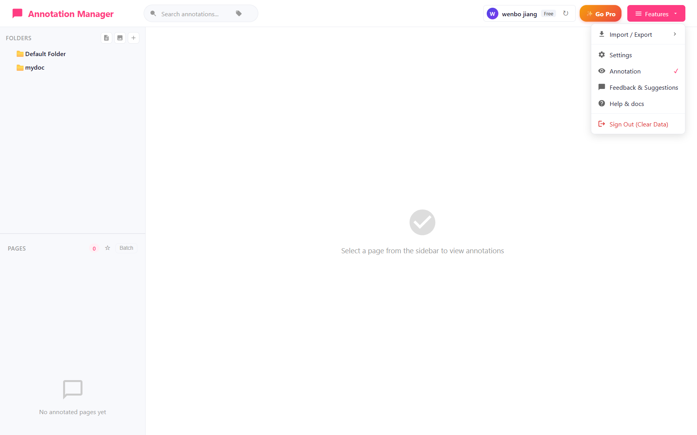

Annotation Manager
Your library of everything you have annotated: every page, highlight, drawing, note, and snapshot — browsable, searchable, editable, and backed up.
Opening the manager
- On any page: open the control panel's More (⋯) menu → Annotation Manager.
- From the toolbar: click the Sagitnote icon → Annotation Manager.
The manager opens in its own browser tab. After you have registered and signed in once, your library is stored in this browser and stays available even when you are offline.
Interface overview

- Header — global search, your account, Sync now, and the Features menu (import/export, shares, settings, and more).
- Left sidebar — the folder tree, including favorites and recent pages.
- Page list — every annotated page with its title and annotation count.
- Detail view — the annotations of the selected page, with screenshots and notes.
Browsing and searching
- The header search box searches annotation quotes, notes, tags, page titles, and domains — and even the text of your documents. A tag filter can be combined with the keyword.
- Click folders in the sidebar to narrow the page list; the star button toggles a favorites-only view.
- Select a page to see all of its annotations, grouped and filterable by type, sortable by position or time.
Viewing and editing annotations
Select a page to browse its annotations. Each card shows the type, content preview, note, tags, and author (when a page has annotations from several people). From a card you can open the original page, edit the annotation's note and tags, or delete it.
Color, style, and position edits are done on the page itself: open the page and use the annotation's quick popup or the drawer's Annotation Detail. Edits made anywhere are reflected everywhere — the next visit to the page shows the updated annotations.
Folders and favorites
Create folders (the ➕ button in the sidebar) to organize pages by project or topic; nested sub-folders are supported. Move pages from the page's ⋯ menu, the folder's context menu, or batch mode (select several, then move). Deleting a folder keeps its pages — they become unclassified. Star a page (from the panel's More menu → Add to favorites, or the ★ in the list) and filter the list to favorites with the ☆ button.
Import and export
Back up your library or move it between machines: open Features → Import / Export.
- Export current page — one page's annotations and content.
- Export all — a complete backup of folders, pages, annotations, tags, documents, snapshots, and images as a single compressed file.
- Incremental export — writes your library as Markdown into a folder of your choice; run it again later and only what changed is updated. Great for keeping a Markdown copy (such as Obsidian) in sync.
- Import — restore from an exported file; choose to skip existing annotations or overwrite them.
Export formats: the free plan supports JSON, CSV, and Markdown; Pro adds HTML.
Cloud sync
When you are signed in, your library is backed up to your account and kept identical on every device where you sign in (both plans are subject to daily creation caps — Pro's are much higher).
- Automatic — local changes are pushed automatically (batched, usually within half a minute); updates from other devices are pulled every few minutes, and also at login or when the manager opens.
- Sync now — push and pull immediately; also clears pauses in automatic sync.
- Sync failures — the header icon lists items that could not be uploaded (with reasons), each retryable; you can also retry all at once. Items are retried automatically up to 10 times.
- Sign in with the same account on another device to bring your library over.
If the service is temporarily unreachable, automatic sync pauses and resumes on its own; conflicts are resolved automatically (latest change wins) and reported in the sync summary.
Sharing
Share a document's annotations with others: open the page (or document snapshot), then More (⋯) → Share annotations. Choose what recipients can do — view, annotate, reply, edit — optionally protect the link with a password, and pick an expiry (1–30 days). Anyone with the link opens it in any browser; no extension required.
Open Features → Shares to manage what you have shared: copy links, adjust permissions or expiry, regenerate a link (the old one stops working immediately), disable or delete shares, and see how many people interacted. Replies from collaborators appear on the page itself when you open it.
The Features menu

| Item | What it does |
|---|---|
| My info | View your account details and usage. |
| New document | Create a document of your own (see Your Own Documents). |
| New document from images | Turn local images into an annotatable document in one step. |
| Import / Export | Back up and restore annotations (see above). |
| Shares | Manage shared links. |
| Settings | Open the extension settings (colors, image annotations, display, data, theme, shortcuts). |
| Annotation | Temporarily show/hide annotations everywhere. |
| Feedback & Suggestions | Send feedback to the team. |
| Help & docs | Open this documentation. |
| Sign Out (Clear Data) | Sign out; optionally clear this browser's local annotation data. |
Getting help
Something not working as expected? Use Feedback & Suggestions in the Features menu, or write to service@webnoteshub.com. The Troubleshooting and FAQ pages cover quick fixes.